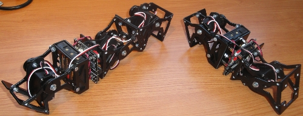

Durante la semana del 12 al 16 de Abril de 2010 se celebra la Semana de la Robótica Alcabot-Hispabot organizada por el departamento de Electrónica de la Universidad de Alcalá.
Impartiré una conferencia-demo sobre Robots ápodos modulares el Miércoles 14 de abril, a las 12:30. Mostraré los módulos MY1, que son los últimos que hemos construido y llevaré los robots Unimod, Minicube-I, Cube3 y Minicube-II. Del resto de robots modulares mostraré vídeos y explicaré cómo se consigue implementar la locomoción mediante osciladores sinusoidales.
Si os gustan los robots modulares… ¡Allí nos vemos! 😉